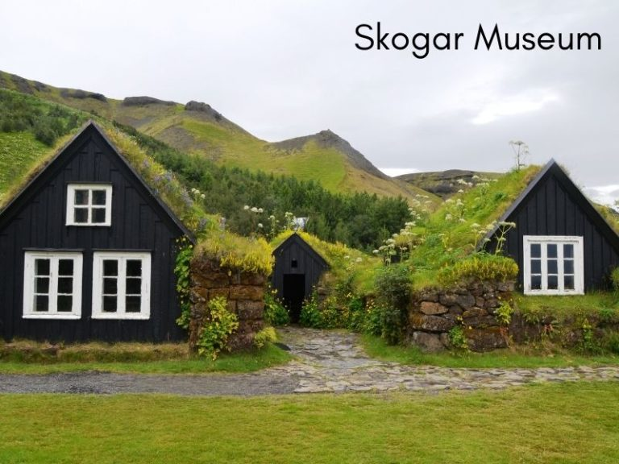
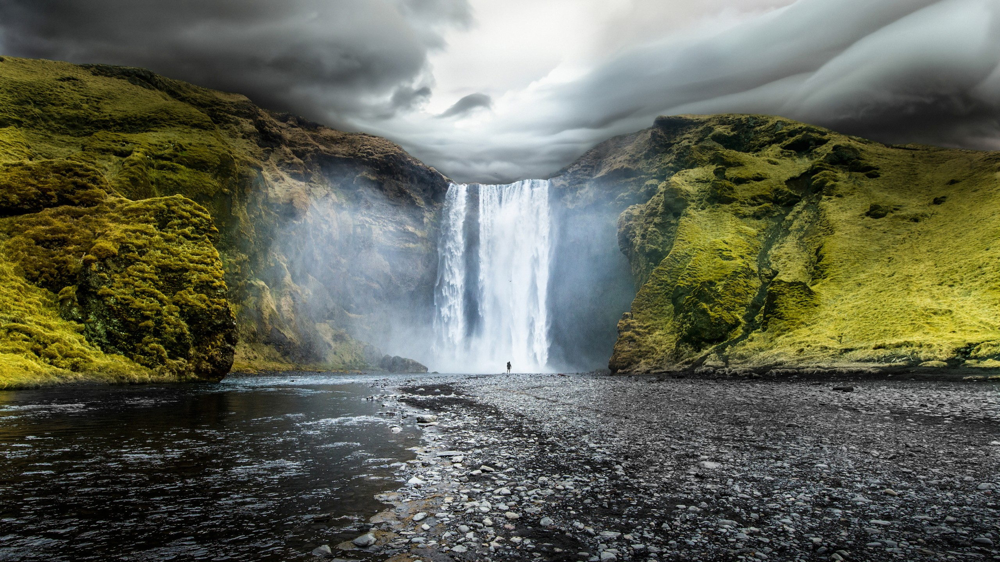
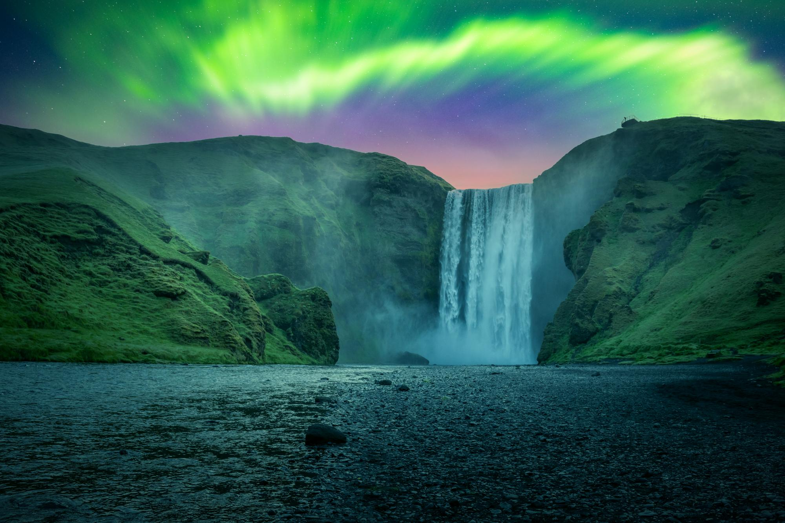

À propos de Skogafoss
La Skógafoss est une cascade située sur la rivière Skógá, dans le petit village de Skógar, dans le sud de l'Islande.La rivière Skógá se jette de ses falaises et tombe de 62 mètres en formant une chute d'une largeur de quelque 25 mètres.
Activités à faire
- Randonnée sur le sentier d'environ 1 h 30 aller-retour.
- Découvrez le musée de Skógar.
- Visite de la cascade.
- Observer les aurores boréales en hiver.
- Goûter aux spécialités culinaires de la région.
Aperçu



Vidéo de présentation
Informations pratiques
Adresse: Skógafoss se trouve sur la côte sud de l'île, près du village de Skógar.
Accès: Le stationnement est gratuit pour le moment, mais coûtera entre 750 et 1000 ISK à partir de septembre 2025.
Comment s’y rendre ?
- Avion : Prenez un vol jusqu'à l'aéroport de Reykjavik.
- Louer une voiture : La meilleur méthode. Suivez la Route 1 en direction de l'est et vous trouverez le parking gratuit à proximité de la cascade.
- Bus public : Si vous n'avez pas de voiture, vous pouvez prendre un bus public depuis Reykjavík.
Conseil VP Tours : La voiture est le moyen plus rapide et le plus simple.